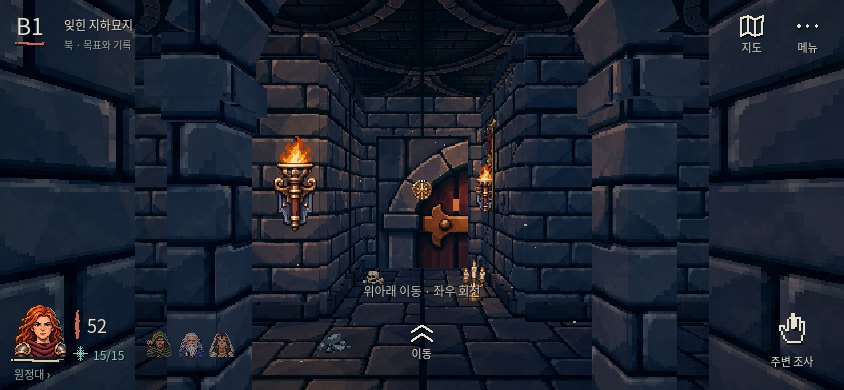
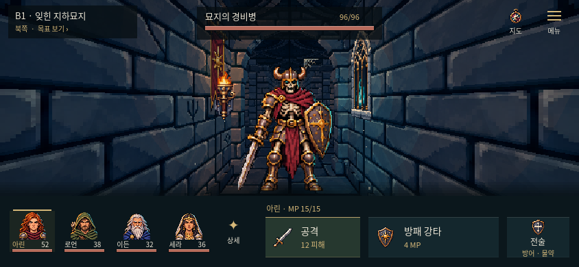
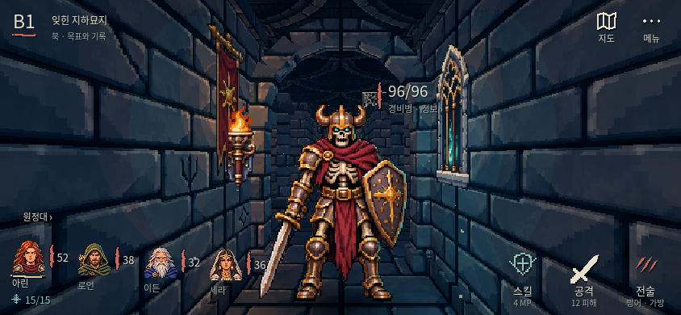

바닥과 대상에 남는 표식
하단 띠를 없애 던전이 화면 끝까지 이어집니다. 바닥의 이동 표식과 물체 곁의 조사 아이콘을 터치하거나, 기존 스와이프로 탐험합니다.
선택한 C 「재의 흔적」을 실제 게임에 적용했습니다.
초상화 옆의 체력선, 작은 마나 룬,
대상에 붙는 정보와 독립된 행동 아이콘.
기존 아트·제스처·전투 규칙은 유지했습니다.

하단 띠를 없애 던전이 화면 끝까지 이어집니다. 바닥의 이동 표식과 물체 곁의 조사 아이콘을 터치하거나, 기존 스와이프로 탐험합니다.
붉은 세로선으로 HP, 청록 룬과 숫자로 MP를 읽습니다. 현재 영웅은 짧은 밑줄로 구분하고, 적의 체력은 실제 대상 위치를 따라갑니다.
지도는 경로선, 파티는 얼굴 중심의 확장, 가방은 펼쳐 놓은 소지품으로 표현합니다. 설정에는 읽기 위한 조용한 면만 남겼습니다.


「재의 흔적」을 적용한 Godot 실행 영상입니다. 이동 표식, 지도 핀치, 원정대 전환, 전술과 물약 사용을 입력 이벤트로 진행했습니다. 상단 선택기는 실제 캡처 비교용이며, 게임 플레이는 Godot 프로젝트에서 실행합니다.
Godot 4.6.3에서 project.godot를 가져와 F5로 실행하세요. 키보드와 마우스 조작도 유지했습니다.
규칙 29개·UI 144개 검사 통과. 다섯 화면 크기와 2배 밀도에서 터치 이벤트를 검증했습니다. Android/iPhone 실기기 성능·노치·햅틱은 아직 검증하지 않았습니다.